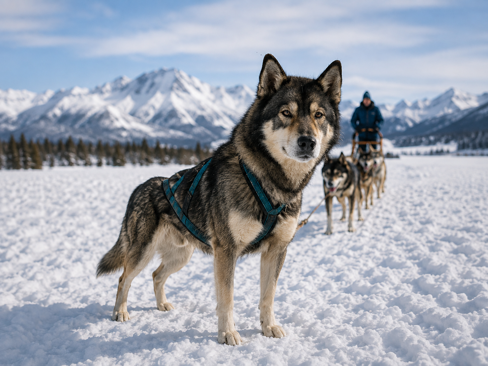
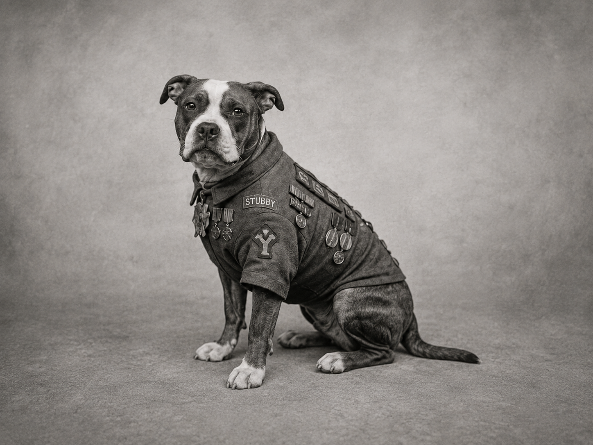
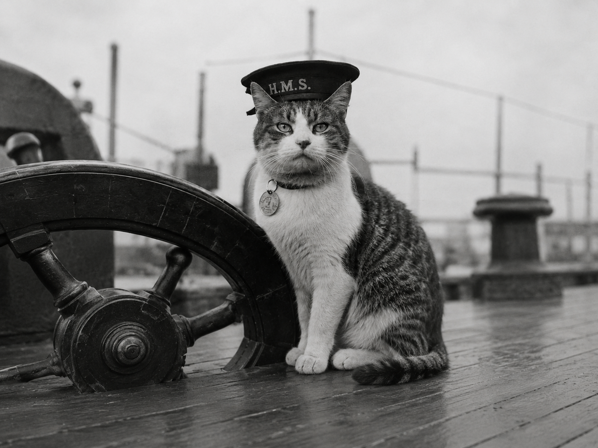

Historias que Inscriben el Corazón
Descubre los relatos de mascotas increíbles que han dejado una huella imborrable en la historia mundial y en las vidas de quienes decidieron abrirles su hogar.
Mascotas que Cambiaron la Historia

Hachiko: El Símbolo de Fidelidad
Durante más de nueve años, este fiel perro Akita esperó la llegada de su dueño en la estación de Shibuya, convirtiéndose en un ícono eterno de lealtad incondicional.

Balto: La Carrera del Suero
En 1925, Balto lideró una expedición de trineos en medio de tempestades heladas para entregar la medicina que salvó a la ciudad de Nome de una epidemia.

Laika: Pionera del Espacio
Una perrita rescatada de las calles que se convirtió en el primer ser vivo en orbitar la Tierra, abriendo el camino para la exploración del cosmos.

Togo: El Verdadero Líder del Hielo
Togo fue un perro de trineo reconocido por recorrer una de las partes más difíciles de la misión del suero en Alaska. Su resistencia y valentía lo convirtieron en un héroe silencioso de la historia.

Stubby: El Perrito Soldado
Stubby fue un perro que acompañó a soldados durante la Primera Guerra Mundial. Su instinto, lealtad y valentía lo hicieron recordado como una de las mascotas más heroicas de su tiempo.

Sam: El Gato Insumergible
Sam fue un gato recordado por sobrevivir a varios naufragios durante la Segunda Guerra Mundial. Su historia se volvió símbolo de resistencia, suerte y fortaleza.
Historias de Adopción y Amor Real
Cargando historias que inspiran...